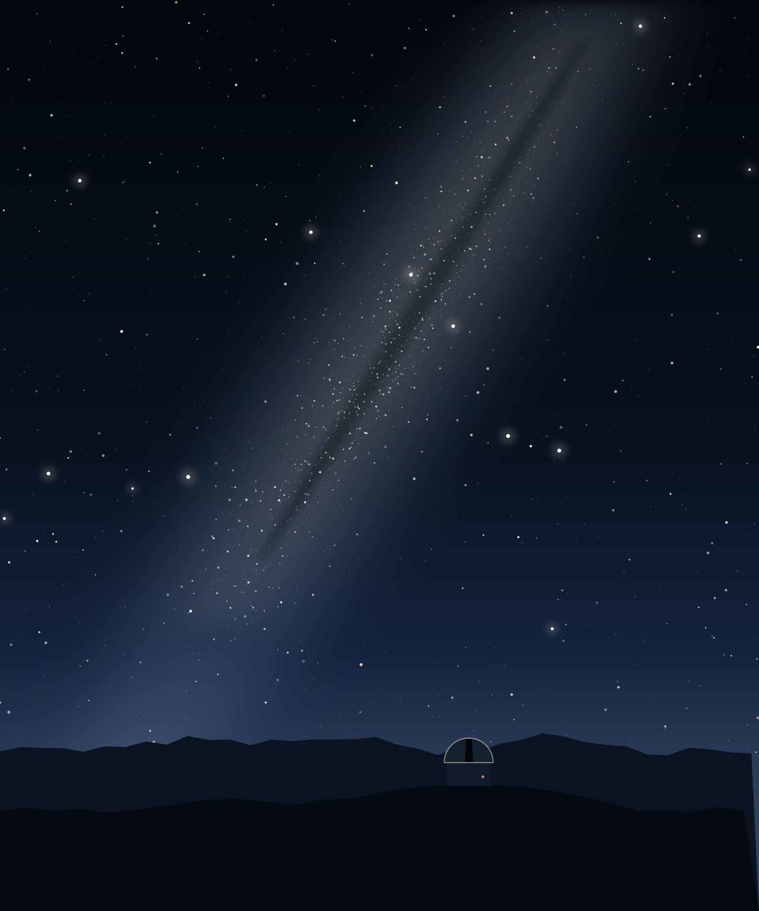
Imagen de ejemplo: aquí va la foto de Mako
Tours de observación por telescopio en Alcohuaz
Una noche para aprender a mirar
-
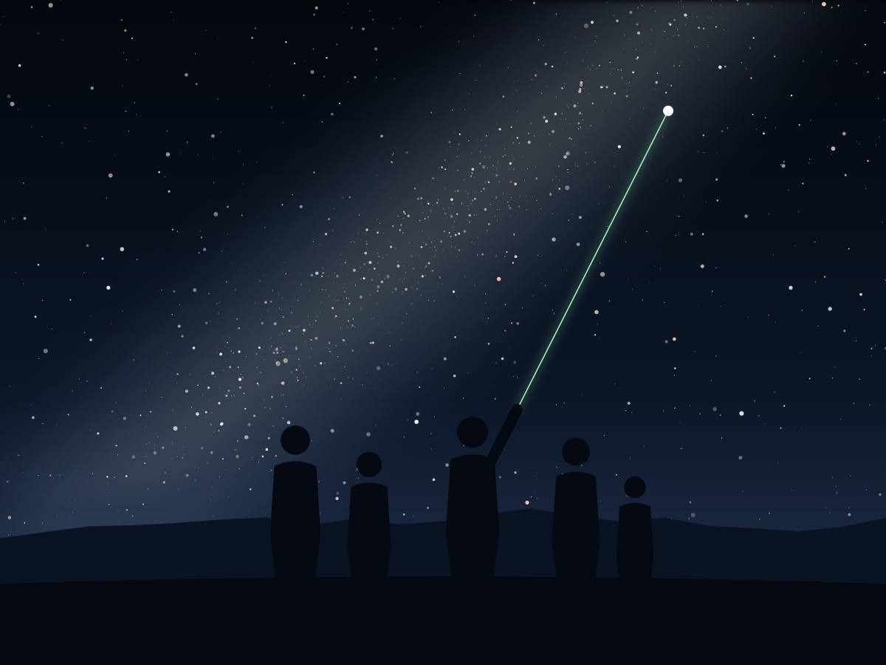
Imagen de ejemplo A simple vista
Con un puntero láser, aprendes a encontrar las estrellas y constelaciones del cielo del sur.
-
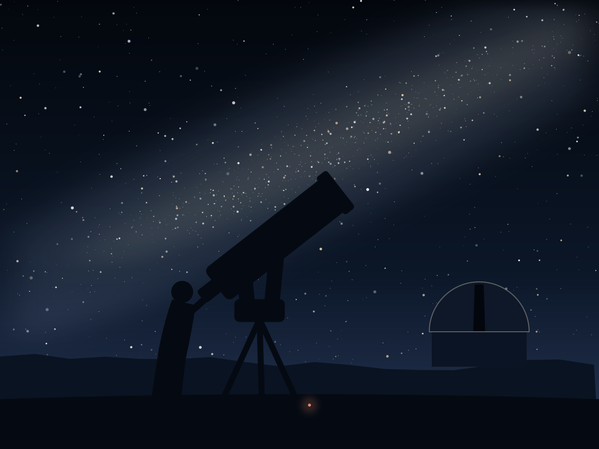
Imagen de ejemplo Por el telescopio
Lo que viste como un punto se abre en el ocular: cúmulos, nebulosas, la Luna y los planetas, según la temporada.
-
Lo que te llevas
La próxima vez que mires al cielo, vas a saber dónde está la Cruz del Sur.
Algunas de las luces que vas a ver salieron de allá hace miles de años. Esa noche, vas a estar mirando el pasado.
[Mako confirma que el tour sigue así]
Lo que pasa esa noche
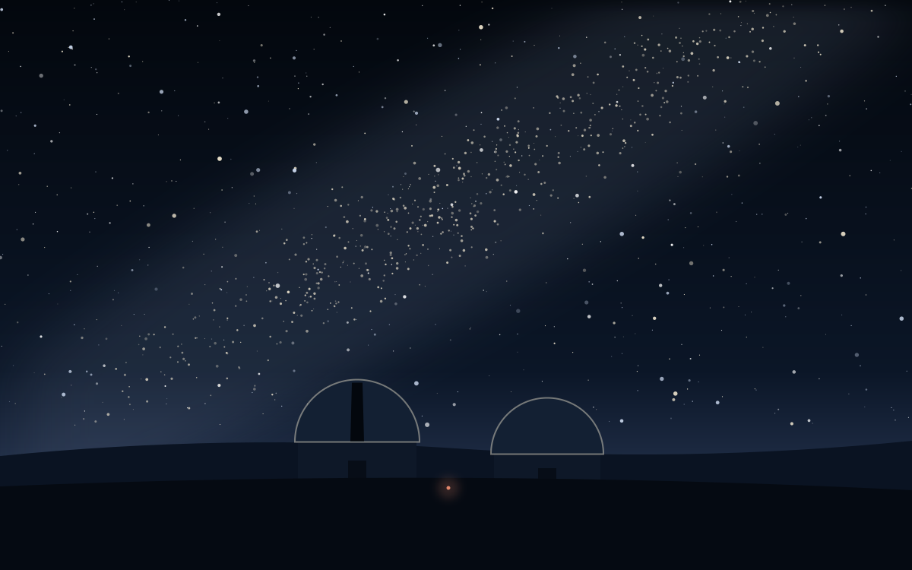
60 a 90 minutos, en grupos de 2 a 9 personas, para que todos tengan tiempo en el ocular.
Dos cúpulas de observación y un telescopio Celestron de 11 pulgadas con oculares Televue.
Qué se ve por el telescopio
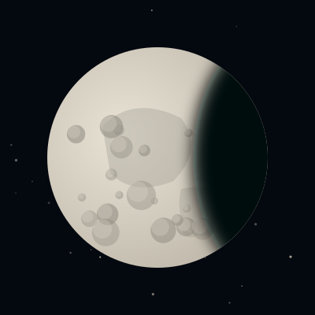
La Luna y sus cráteres 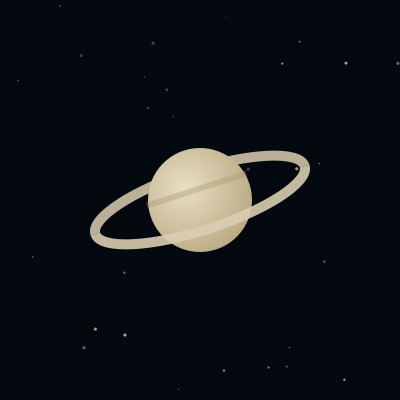
Saturno y sus anillos 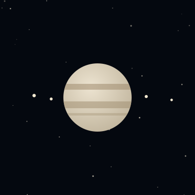
Júpiter y sus lunas 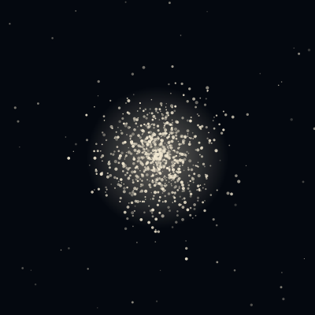
Un cúmulo globular, el del logo 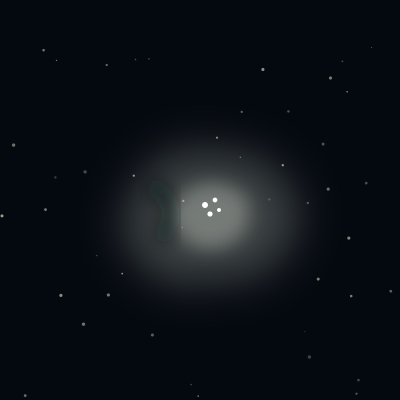
Una nebulosa
Imágenes de ejemplo Por el ocular se ven más pequeñas y en tonos más suaves.
En verano
Orión, Tauro, Can Mayor, Can Menor y Cetus
En invierno
Escorpión, Sagitario, Lira, Libra, Capricornio y la Cruz del Sur
Lo que se ve depende de la época del año y de la luna. De septiembre a marzo hay más noches despejadas.
- No necesitas saber de Astronomía: el tour está pensado para quien mira el cielo por primera vez.
- Niños desde los 5 años, por la duración y las explicaciones.
- En español o en inglés.
[Datos de la página antigua de Mako: él confirma que siguen vigentes]
Cómo funciona
De la reserva a la noche, paso a paso.
-
Me escribes con tu fecha y número de personas
Desde el botón Reserva. Te respondo para confirmar si hay cupo. [en cuánto tiempo responde Mako]
-
Pagas y tu cupo queda reservado
El pago es del 100% por adelantado, porque los grupos son reducidos y el cupo queda reservado solo para ti. [medios de pago]
-
Llegas a Alcohuaz
A unos 120 km de La Serena (cerca de 2 h 30 min en auto) y a 13 km de Pisco Elqui. El último tramo es de montaña y con curvas.
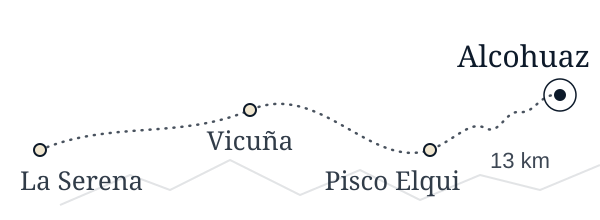
En verano, los tours parten a las 21:45. [punto de encuentro y horario de invierno: Mako confirma]
-
Vives la noche
Entre 60 y 90 minutos: primero a simple vista y después por el telescopio. Ven abrigado: de noche hace cerca de 10 °C en verano y 4 °C en invierno. Si hay Luna, trae el celular para fotografiarla.
¿Y si el cielo no está en condiciones?
Se hace devolución del 100%. [¿o se puede reagendar?]
Precio y qué incluye
Por persona, en pesos chilenos. [Precios publicados en febrero de 2024: Mako confirma los de esta temporada]
Incluye
- El tour guiado de 60 a 90 minutos
- Observación a simple vista, con puntero láser
- Observación por telescopio en las cúpulas
- Explicaciones en español y/o inglés
No incluye
- Traslado hasta Alcohuaz
- Comida y bebidas
- Ropa de abrigo
[Mako confirma]
Condiciones
- Se reserva con el pago del 100%: los grupos son reducidos y el cupo queda reservado solo para ti.
- Si el cielo lo permite, el tour se hace. Si el clima no deja, te devuelvo el dinero. [¿o se reagenda?]
- Si cancelas o no llegas, el pago no se devuelve.
- [norma sobre alcohol, por respeto al grupo]
Reserva con tranquilidad
- Si el cielo no está en condiciones, se hace devolución del 100%.
- Reservas hablando directo con el Guía, el dueño del observatorio.
- Precio y condiciones claros desde el principio: lo que ves aquí es lo que pagas.
- 16años mirando este cielo
- 4,5en Google y Tripadvisor
- 84opiniones de visitantes
Nos han destacado
-
Entre los 17 mejores lugares para ver estrellas en Chile
this tiny village is home to Cielo Sur Observatorio
-
Uno de los 6 observatorios ideales del Valle del Elquiun aficionado a la astronomía instaló en 2010 el Observatorio Cielo Sur
-
Recomendado por el sitio oficial de turismo de ChileSus cielos, de los más despejados del planeta, son una ventana al universo
…al ser un grupo pequeño puedes analizar todo con tranquilidad sin ningún apuro.
El lugar era maravilloso, cero contaminación lumínica, muy simpático el guía, responde todas tus dudas y explica todo con claridad.
Muy linda experiencia, el guía muy simpático y amable, una experiencia para recordar
Lee todas las opiniones en Google y en Tripadvisor
Hay cosas que una pantalla no te puede mostrar. Ven a mirarlas con tus propios ojos.
Preguntas frecuentes
¿Qué ocurre si el cielo está nublado?
Si el clima no permite hacer el tour, te devuelvo el dinero. [PENDIENTE: confirmar si también se puede reagendar]
¿Es necesario tener conocimientos de Astronomía?
[PENDIENTE: respuesta de Mako]
¿Pueden participar niños? ¿Existe una edad mínima?
[PENDIENTE: edad mínima; si es apto para adultos mayores]
¿Qué temperatura hace en la noche y qué se recomienda llevar?
Trae ropa abrigada. [PENDIENTE: otros ítems que recomienda Mako]
¿La luna influye en lo que se puede observar?
Sí. Con luna llena el cielo está más iluminado y los objetos más débiles cuestan más de ver. [PENDIENTE: Mako confirma y cuenta qué muestra en noches de luna]
¿El tour se realiza en inglés?
Sí, hago los tours en español y en inglés. Cuando me escribas, cuéntame en qué idioma lo prefieres. [PENDIENTE: confirmar si sigue haciendo tours en francés]
¿Cuáles son los medios de pago?
La reserva se paga completa por adelantado. [PENDIENTE: medios de pago]
Dónde estamos
Alcohuaz, Valle del Elqui, a 13 km de Pisco Elqui.